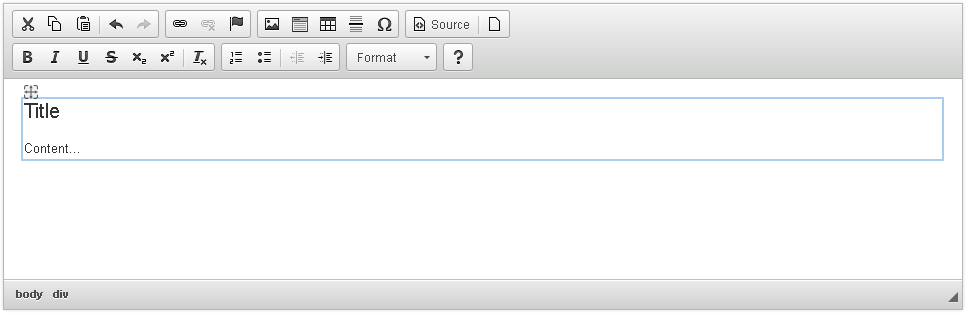
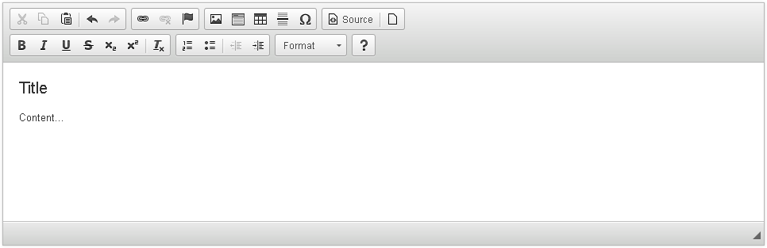
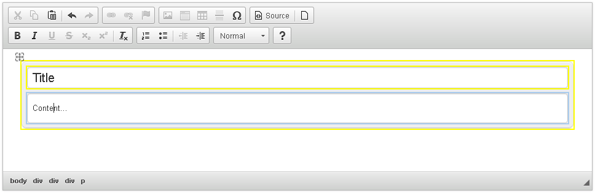
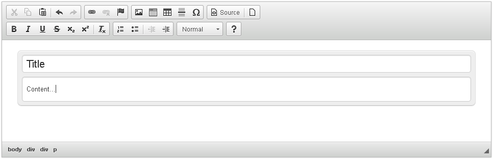
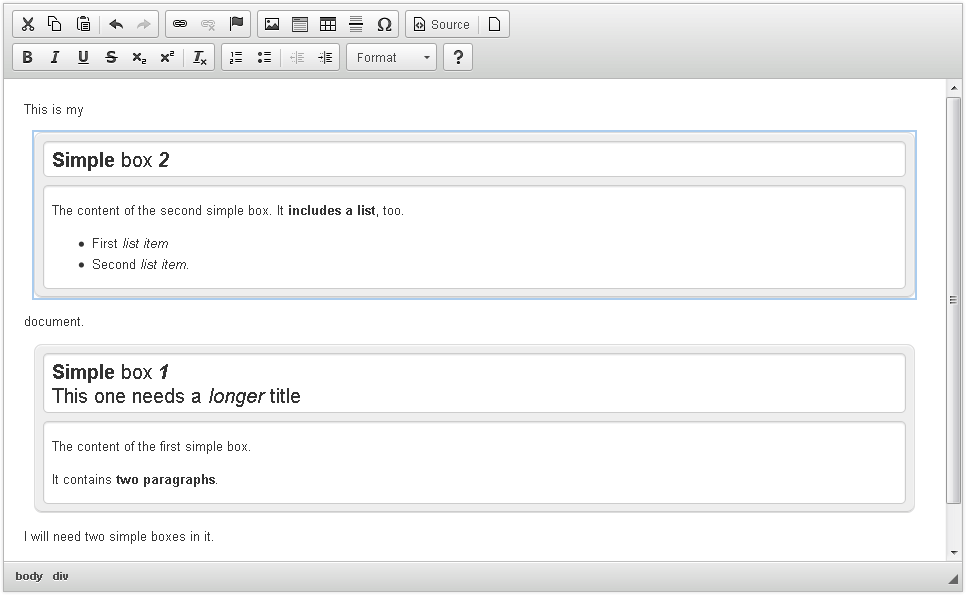

Creating a Simple CKEditor Widget (Part 1)
Creating a Simple CKEditor Widget (Part 1)
The aim of this tutorial is to demonstrate how to create a basic CKEditor widget plugin.
# Prerequisites
Widgets are an innovative feature that is available since CKEditor 4.3. In order to proceed with this tutorial and create your own widget you need the following:
- CKEditor 4.3 and above.
- The Widget plugin along with its dependencies.
# Introduction
We are going to develop a basic template widget that lets the user insert a simple box with a title and comment fields into the document. The widget will create a predefined content structure that will be added to the document when the user clicks a dedicated toolbar button.
Please note that technically widgets are defined in CKEditor plugins so all the rules of creating plugins as well as the Plugin API apply to them. Additionally, widgets also expose a dedicated Widget API that we are going to use (and explain) in this tutorial.
The widget plugin will be named simplebox.
# Widget Plugin Files
Firstly, we will need to create the simplebox directory inside the plugins directory of the CKEditor installation.
Remember that for CKEditor the name of the plugin directory is important and has to be the same as the name of the plugin, otherwise the editor will not be able to recognize it.
Inside the newly created simplebox directory we are going to place the plugin.js file that will contain the widget logic. Apart from that, since we will also need a toolbar icon for our widget, we are going to add an icons directory and subsequently place the simplebox.png file inside.
To sum up, we will need the following file structure for our plugin to work:
ckeditor root/plugins/simplebox/icons/simplebox.png
plugin.js
# Widget Source Code
With the following structure ready, it is time to open the plugin.js file in a text editor and to start creating the source code of our sample widget.
CKEDITOR.plugins.add( 'simplebox', {
// Simple Box widget code.
} );
All CKEditor plugins are created by using the CKEDITOR.plugins#add function. This function should contain the plugin name (again, the same as the directory name, so simplebox in our case) and the plugin logic placed inside the init function that is called upon the initialization of the editor instance.
The simplebox plugin is going to define the simplebox widget. To do this, the plugin needs to reference the generic Widget plugin that provides the Widget API. This is done in the requires property.
Additionally, as we are going to define a toolbar button, the icons property needs to be set and include the name of the icon file.
Please note the special naming convention for widget toolbar buttons. The Widget API will only be able to automatically add the button to the toolbar if the name of the icon is the same as the widget. In this case this will be simplebox. Do remember that the icons property accepts a PNG icon file name without an extension.
CKEDITOR.plugins.add( 'simplebox', {
requires: 'widget',
icons: 'simplebox',
init: function( editor ) {
// Plugin logic goes here...
}
} );
# Widget Registration
We now need to use the Widget API to register the widget with the editor instance. This is done by using the editor.widgets.add method inside the plugin initialization logic.
init: function( editor ) {
editor.widgets.add( 'simplebox', {
// Widget code.
} );
}
The editor.widgets.add method accepts a number of parameters (wrapped as an instance of the CKEDITOR.plugins.widget.definition class) that let you define the widget properties, including the toolbar button, content required by the widget and allowed in the widget elements, widget building blocks, and its template. Last but not least, we need to define the elements that will be converted into widgets in the editor.
# Widget Toolbar Button
A toolbar button can be added by defining the button property. This property accepts the label for the button and if defined, automatically adds the button (with the icon defined in the icons property of the CKEDITOR.plugins.add method, identical to the widget name, and the label defined here) to the editor toolbar.
editor.widgets.add( 'simplebox', {
button: 'Create a simple box'
} );
Please note that normally you would place the label in the editor.lang.simplebox.* property to make it possible to localize it. In this case, however, we will simplify the widget code and add the label text literally as a string.
# CKEditor Initialization
It is now time to initialize a CKEditor instance that will use the Simple Box widget along with its toolbar button.
To register the widget plugin with CKEditor, we have to add it to the config.extraPlugins list. In this particular case, to make screenshots more clear, we also enhanced the toolbar definition and removed some unnecessary plugins that we will not need in this sample, but you can try it out on any installation package of CKEditor 4.3 and above that contains the Widget plugin.
Open the page that will contain CKEditor in a text editor and insert a CKEditor instance using the following configuration.
<textarea cols="80" id="editor1" name="editor1" rows="10"></textarea>
<script>
CKEDITOR.replace( 'editor1', {
// Load the Simple Box plugin.
extraPlugins: 'simplebox'
} );
</script>
After you load the page containing the above CKEditor instance, you should be able to see the new plugin toolbar button along with its tooltip.

# Creating Widget Elements
We now need to create the widget structure. This can be achieved by using the template property of the widget definition.
Each widget consists of one or more HTML elements defined by the widget author. Once set, this structure becomes immutable, which means that it cannot be altered by the user. This ensures that the widget structure remains intact and the user will not be able to accidentally alter it or delete one of its parts.
Let us define a simple widget template that will consist of two fields: a title field (using a <h2> element) and a content field (using a <div> element).
editor.widgets.add( 'simplebox', {
// Code defined before...
template:
'<div class="simplebox">' +
'<h2 class="simplebox-title">Title</h2>' +
'<div class="simplebox-content"><p>Content...</p></div>' +
'</div>'
} );
After you reload the page and click the widget toolbar button, you will insert the following structure into the editor.

Note the small gray handle ( ) in the top left-hand corner of a widget that appears when you hover over or select the widget. If you hover over it with your mouse, a “move” cursor will appear. All widgets can be dragged inside the editing area of CKEditor and dropped wherever you want to place them. And since the widget structure is immutable, there is no chance that the widget will become corrupted in the process or otherwise fall apart!
) in the top left-hand corner of a widget that appears when you hover over or select the widget. If you hover over it with your mouse, a “move” cursor will appear. All widgets can be dragged inside the editing area of CKEditor and dropped wherever you want to place them. And since the widget structure is immutable, there is no chance that the widget will become corrupted in the process or otherwise fall apart!
# Adding Editable Parts
Note, however, that at the moment Simple Box is of no real use for the user because so far the widget only contains the immutable structure and no editable content.
To change this and allow for some user input, we will need to define the editables property of the widget definition. This property uses the selector parameter to define a CSS selector to be used for finding the particular editable element inside the widget element. In this case the selectors will use the classes that we assigned to the widget fields in the template definition.
Please note that only elements defined in CKEDITOR.dtd.$editable can be converted into editable widget elements.
Please note that editables have to be defined in the same order as the corresponding elements are placed in DOM. Otherwise, errors may occur when nesting widgets.
editor.widgets.add( 'simplebox', {
// Code defined before...
editables: {
title: {
selector: '.simplebox-title'
},
content: {
selector: '.simplebox-content'
}
}
} );
After you reload the sample page and click the widget toolbar button again, the inserted widget will become editable. When you hover over it with your mouse, you will see the yellow outlines for parts that can be edited.

# Nesting Widgets
CKEditor 4.5 brought support for inserting widgets into other widget’s nested editable parts. This means that for example an instance of the Simple Box widget can be included in the content of another Simple Box. Enabling this feature does not require any additional steps, but it is important to remember that the widget to be nested must fulfill the rules of the nested editable part’s allowed content.
Note that due to limitations of Internet Explorer 8 nested widgets may not be fully functional in this browser.
# Widget Styling
Currently the widget does not look very impressive and does not stand out in the editor content. Let us add some styling to the structure it generates to make it more obvious that it constitutes a special unit of content.
Each CKEditor plugin, included widgets, can add its own styles for editor content. Depending on your CKEditor usage scenario (classic vs inline editor) the styles will need to be added to the contentsCss setting or added to the page styles.
To simplify the tutorial, let us assume you are using the classic editor. The styling of classic editor content is done by using the contents.css file. Add the styles below to your default contents.css file:
.simplebox {
padding: 8px;
margin: 10px;
background: #eee;
border-radius: 8px;
border: 1px solid #ddd;
box-shadow: 0 1px 1px #fff inset, 0 -1px 0px #ccc inset;
}
.simplebox-title, .simplebox-content {
box-shadow: 0 1px 1px #ddd inset;
border: 1px solid #cccccc;
border-radius: 5px;
background: #fff;
}
.simplebox-title {
margin: 0 0 8px;
padding: 5px 8px;
}
.simplebox-content {
padding: 0 8px;
}
Please note that if you are working with the inline editor, you need to add these styles to your page that displays the editor. And if you want to share your plugin with others, refer to the Plugin CSS Styles article that explains the recommended way to control plugin styling.
After you reload the page and insert the widget again, you will see that thanks to the styling we added it now stands out from the rest of the editor content.

# Adjusting Advanced Content Filter
You might remember that since the introduction of content filtering in CKEditor each plugin that adds editor content must define a list of HTML elements, classes, and styles that need to be added to the filter for the editor to allow them. Additionally, you should also define the minimum HTML code that is required for the feature to work which will cause the widget to be disabled if the user configuration overwrites the filtering rules added to the filter by this feature.
The need for these changes might not have been immediately visible so far in our sample since we just kept on reloading the same page and did not try to load the data back into the editor. Let us simulate this scenario now by inserting the widget again, going to Source view and back to WYSIWYG view.
In Source view (opened by clicking the Source button) you can see the following widget code:
<div class="simplebox">
<h2 class="simplebox-title">Title</h2>
<div class="simplebox-content">
<p>Content...</p>
</div>
</div>
which is exactly what our widget template is. However, when you go back to the WYSIWYG view, you will see that parts of the widget template are gone. Going to Source again will reveal that the widget code is now simply:
<div>
<h2>Title</h2>
<div>
<p>Content...</p>
</div>
</div>
This is what was left of the Simple Box widget:

Why is that?
This is because Advanced Content Filter removed all code that does not match your editor configuration and the list of allowed elements, classes, attributes, and styles. Since the elements that the widget introduces (<div>, <h2>, and <p>) are most probably already present in your editor configuration and allowed anyway, they were left intact, but the classes that were defined in these elements were stripped as disallowed.
This means that in the widget plugin code we must take care of adding the elements that the widget creates to the content filter in order to prevent the editor from removing them. This can be done in the allowedContent property of the widget definition.
Another widget definition property, requiredContent, lets you define the minimum HTML that is required for the widget to work correctly. This ensures that if the global user-defined editor filter overwrites the widget filter settings, the widget will be disabled.
editor.widgets.add( 'simplebox', {
// Code defined above...
allowedContent:
'div(!simplebox); div(!simplebox-content); h2(!simplebox-title)',
requiredContent: 'div(simplebox)'
} );
After reloading the page and repeatedly switching between the Source view and the WYSIWYG view you will see that the building blocks of the widget structure were successfully added to the list of allowed elements and the editor no longer deletes them. You might notice that the whole construct still has some flaws after switching back to WYSIWYG (in fact, it no longer is a widget with all its functionality, but just the immutable template with editable fields), but we will address these issues in a moment.
# Limiting Available Formatting
Advanced Content Filter can also be used for another useful purpose: to limit the features available in the editable widget elements. At the moment the user can insert any content that is available in the configuration of the editor instance into both widget fields. This does not make a lot of sense since for example items like an image or a list would actually be undesired in the title field.
Adjusting the content filter for editable widget elements can give the widget author more control and allow him to make sure that the widget can be and will be used for the purposes it was created for.
Content filter adjustments for editable widget parts are done straight in their definitions inside the editables property, through the allowedContent parameters.
editables: {
title: {
selector: '.simplebox-title',
allowedContent: 'br strong em'
},
content: {
selector: '.simplebox-content',
allowedContent: 'p br ul ol li strong em'
}
},
In this case we allowed just bold, italic, and line breaks in both fields and additionally lists and paragraphs in the content field.
Please note that thanks to content transformations with the configuration used above the editor will allow all forms of bold and italic formatting (so for example <strong>, <b> and <span style=“font-weight:700|800|900|bold”>). It is enough to list just one of the forms and others will get transformed automatically to the allowed form.
When you reload the page now, you will see that when you try to edit the widget fields, some toolbar items become greyed out (meaning they are not available in this context) and you will be unable to use them. Likewise, if you used them in Source mode, the editor would cut them out when switching to WYSIWYG view or saving the document.

# How Does a Widget Become a Widget?
A final, but perhaps most important issue is: How does CKEditor know that a piece of code is actually a widget and needs to be treated accordingly? After all you could easily insert the same structure that we used as our template straight into the document — would it become a widget, too?
This can actually be tested in Source mode again. Try pasting our widget template into the Source and switch to WYSIWYG or insert a widget, go to Source and back to WYSIWYG. The structure that you defined in the template is there, but the entire unit is no longer a widget — the drag icon is gone and you cannot select, move, or delete the entire entity like before.

The answer is then: Each widget definition in the plugin code must include the upcast property that is responsible for checking whether an element should be converted into a widget. This property defines a function that returns true for an element that needs to become a widget.
In our case we will assume that each <div> element with the simplebox class must be converted into a widget.
editor.widgets.add( 'simplebox', {
// Code defined above...
upcast: function( element ) {
return element.name == 'div' && element.hasClass( 'simplebox' );
}
} );
Note that the element argument is an instance of CKEDITOR.htmlParser.element, which means it is not a real DOM element yet. This is caused by the fact that upcasting is performed during data processing which is done on DOM represented by JavaScript objects.
Anyway, this is it. The widget code is complete now and works as intended!
# Full Source Code
The full contents of the simplebox/plugin.js file is as follows:
CKEDITOR.plugins.add( 'simplebox', {
requires: 'widget',
icons: 'simplebox',
init: function( editor ) {
editor.widgets.add( 'simplebox', {
button: 'Create a simple box',
template:
'<div class="simplebox">' +
'<h2 class="simplebox-title">Title</h2>' +
'<div class="simplebox-content"><p>Content...</p></div>' +
'</div>',
editables: {
title: {
selector: '.simplebox-title',
allowedContent: 'br strong em'
},
content: {
selector: '.simplebox-content',
allowedContent: 'p br ul ol li strong em'
}
},
allowedContent:
'div(!simplebox); div(!simplebox-content); h2(!simplebox-title)',
requiredContent: 'div(simplebox)',
upcast: function( element ) {
return element.name == 'div' && element.hasClass( 'simplebox' );
}
} );
}
} );
This should be added to your contents.css file:
.simplebox {
padding: 8px;
margin: 10px;
background: #eee;
border-radius: 8px;
border: 1px solid #ddd;
box-shadow: 0 1px 1px #fff inset, 0 -1px 0px #ccc inset;
}
.simplebox-title, .simplebox-content {
box-shadow: 0 1px 1px #ddd inset;
border: 1px solid #cccccc;
border-radius: 5px;
background: #fff;
}
.simplebox-title {
margin: 0 0 8px;
padding: 5px 8px;
}
.simplebox-content {
padding: 0 8px;
}
You can also download the entire plugin folder including the icon, the fully commented source code, and a working sample. If you have any doubts about the installation process, see the instructions.
# Working Example
The widget plugin code is now ready. When you click the “Create a Simple Box” button on the editor toolbar, a Simple Box widget will be inserted into the document. The box will contain two editable parts — a title field and a content field. Both can be edited, with available formatting limited to a subset of editor features.
At the same time the box itself will be immutable, i.e. you will not be able to alter its structure (at least in the editor WYSIWYG view). You will however be able to treat it as a unit inside the editor contents, move by using drag&drop, or select and delete as a whole.

Note that when you edit the widget fields, the only formatting options that are active in the toolbar are the ones that you allowed for these fields in the widget definition.
You can now grab the second box and drag it up. If you drop it somewhere in the middle of the first paragraph, this paragraph will be split into two as Simple Box is a block widget (which means it cannot be pasted inline into another block element).

# Further Enhancements
In current form the Simple Box widget lets you insert a simple template into the document, but it does not let you customize any properties of the widget structure nor edit it once inserted. Check the second part of the tutorial for information on how to add a widget dialog window with widget editing capabilities!